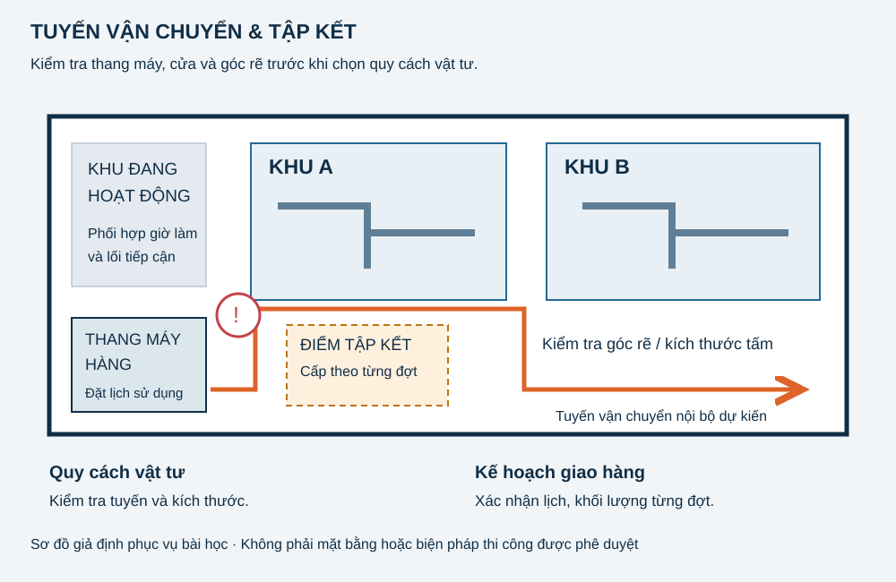

Kiểm tra đường đi
Vật tư qua loading dock, thang máy và các góc rẽ ra sao? Cần xác nhận kích thước, giới hạn tải, lịch sử dụng và điều kiện tiếp cận nào với ban quản lý?
Giá vật tư rẻ hơn chưa chắc làm tổng chi phí thấp hơn. Bạn có thể giải thích cách thi công và giúp Site Manager đưa cả đội vào việc không?
Bạn là Estimator tại một builder cải tạo văn phòng ở Úc. Công ty đang chào giá gói fit-out tại tầng 12 của tòa nhà vẫn hoạt động, gồm vách ngăn, trần và cửa.
Phương án dùng tấm kích thước lớn có giá mua tốt, ít mối nối và dự kiến lắp đặt nhanh. Bạn bóc khối lượng, áp đơn giá và chuẩn bị gửi báo giá. Sếp hỏi: “Em đã kiểm tra đưa vật tư lên tầng 12 bằng cách nào chưa?”
Trong tình huống này, tấm lớn không đi lọt tuyến vận chuyển dự kiến qua thang máy hàng và góc rẽ hành lang. Thang máy phải đặt lịch; diện tích tập kết hạn chế; một số công việc gây tiếng ồn cần bố trí ngoài giờ. Giá vật tư ban đầu chưa phản ánh đủ cách công việc thực sự diễn ra.
Vật tư qua loading dock, thang máy và các góc rẽ ra sao? Cần xác nhận kích thước, giới hạn tải, lịch sử dụng và điều kiện tiếp cận nào với ban quản lý?
Quy cách tấm khác nhau làm thay đổi giá mua, hao hụt, số mối nối, thời gian xử lý và nhân công thế nào? Đưa vận chuyển nội bộ, giao nhiều đợt, thiết bị và làm ngoài giờ vào so sánh.
Phân khu, tập kết và cấp vật tư theo từng đợt. Cùng Site Manager xác định việc làm trước, phần cần phối hợp với các đội khác và điểm phải kiểm tra trước khi chuyển bước.
Hãy đề xuất phương án và cơ sở tính giá để đội công trường rà soát. Mô hình và hình ảnh cần giúp mọi người nhìn rõ các giả định, điểm nghẽn và công việc phát sinh từ điều kiện hiện trường.
Dùng Revit/3D để diễn đạt không gian, kết hợp mặt bằng phân khu và hình ảnh từng bước. Sơ đồ dưới đây minh họa cách biến phương án thành nội dung có thể dùng khi bàn giao và briefing.

Sơ đồ giả định phục vụ thảo luận, không phải hồ sơ dự án hay biện pháp thi công được phê duyệt. Trình tự và điểm kiểm tra cần được thống nhất theo thiết kế, điều kiện và yêu cầu thực tế.
| Tình huống | Tập trung vào bóc tách truyền thống | Kết hợp dự toán, mô hình & biện pháp |
|---|---|---|
| Lập giá | Đo line, tính area, tổng hợp BOQ và áp đơn giá. | Kiểm tra thêm vận chuyển, tập kết, trình tự và tác động đến chi phí. |
| Chọn vật liệu | So sánh giá mua và hao hụt theo khối lượng. | So sánh cả khả năng đưa vào công trình, xử lý, lắp đặt và tiến độ. |
| Bàn giao Site Manager | Gửi bản vẽ đánh dấu, bảng khối lượng và ghi chú để tiếp tục triển khai. | Bàn giao thêm mô hình, tuyến vận chuyển, phân khu và hình ảnh trình tự để cùng rà soát. |
| Hướng dẫn đội thời vụ | Site Manager phải diễn giải nhiều từ bản vẽ, giải thích bằng lời và hướng dẫn tại chỗ. | Site Manager có tài liệu để chỉ rõ khu vực, phạm vi và việc kế tiếp; người mới có thể xem lại. |
| Phương án thay đổi | Cập nhật bản vẽ, bảng tính và giải thích lại cho các bên. | Cập nhật mô hình, sơ đồ và hướng dẫn theo phiên bản đã thống nhất. |
Khác biệt nằm ở năng lực hiểu và truyền đạt cách thi công. Estimator dùng công cụ truyền thống vẫn có thể đóng góp đầy đủ nếu có kiến thức và phương pháp phù hợp; Revit và AI hỗ trợ thể hiện năng lực đó rõ hơn.
Sau khi trúng thầu, Site Manager tiếp nhận nhóm nhân sự thời vụ mới, chưa quen mặt bằng và cách tổ chức công việc. Mỗi lần đổi người, họ lại phải giải thích tuyến vận chuyển, vị trí tập kết và thứ tự thực hiện.
Nếu bạn đã chuẩn bị mô hình và hình ảnh các bước theo khu vực, Site Manager có thể dùng ngay để briefing đầu ca: đội làm ở đâu, làm gì trước, nhận vật tư ở đâu và cần kiểm tra gì trước khi chuyển bước. Người mới nhìn được bức tranh chung trước khi vào khu vực làm việc.
Bạn giúp xây dựng bộ tài liệu có thể dùng lại, cùng Site Manager hướng dẫn đội ngũ và cập nhật khi phương án đổi. Đó là lý do Site Manager có thể coi bạn như một “viên ngọc”: một cộng sự hiểu cơ sở chào giá và hỗ trợ biến phương án thành công việc dễ hiểu.
Tài liệu trực quan đi cùng hướng dẫn an toàn, xác nhận năng lực và giám sát tại hiện trường. Site Manager thống nhất cách triển khai trước khi dùng để hướng dẫn đội.
Nêu giả định về vật tư và điều kiện công trường, cơ cấu tổng chi phí, thời gian và các điểm cần xác nhận. Giải thích vì sao chọn phương án đề xuất.
Thể hiện tuyến vận chuyển, điểm tập kết, phân khu, phạm vi từng nhóm và các bước dự kiến; ghi rõ điểm chờ kiểm tra và phần cần phối hợp.
Chuẩn bị tài liệu ngắn bằng hình ảnh: khu vực làm việc, công việc, thứ tự, trách nhiệm và điểm xác nhận. Ghi phiên bản, ngày cập nhật và người rà soát.
Dùng dữ liệu dự án đã xác nhận để hỗ trợ cấu trúc bảng so sánh, soạn nội dung briefing hoặc rút gọn hướng dẫn. Bạn sẽ kiểm tra nội dung với mô hình và cùng Site Manager rà soát thế nào trước khi đưa cho đội sử dụng?
Một hồ sơ dự toán có giá trị khi những giả định quan trọng được giải thích và chuyển giao rõ ràng. Khi bạn giúp Site Manager hướng dẫn đội ngũ thuận tiện hơn, đóng góp của bạn tiếp tục hiện diện trong quá trình triển khai.
Bạn chỉ bàn giao một bảng giá, hay còn giúp Site Manager nhìn rõ cách tổ chức công việc và hướng dẫn cả đội thực hiện?
Trao đổi Bài toán 03 cùng TCAXem lại Bài toán 02: Cầu thang thép D&CQuay lại các bài toán thực tế